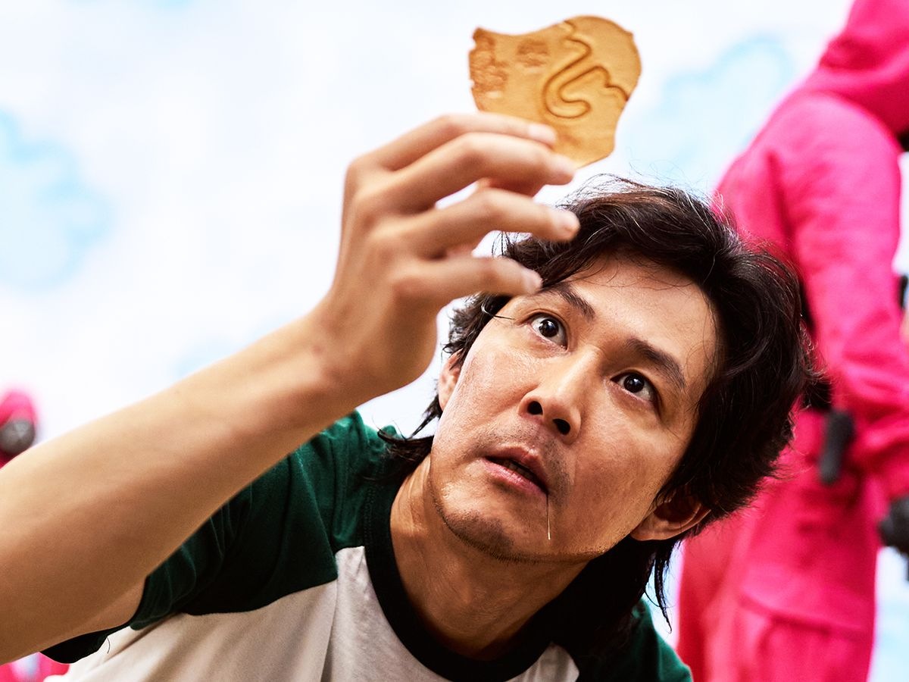
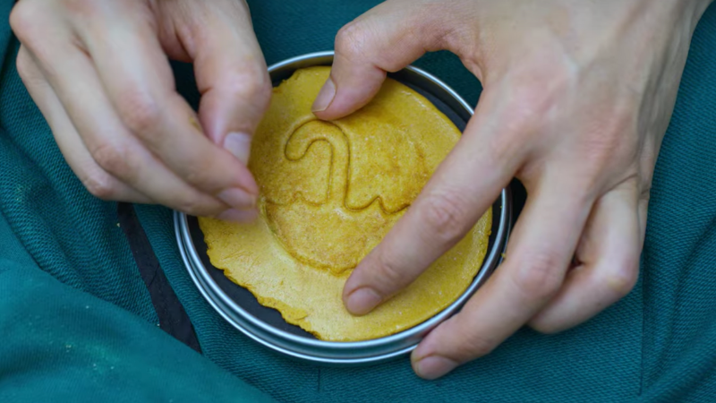

Dalgona Candy from Netflix's Squid Game
Squid Game is an incredible (if not kind of terrifying) show that has many iconic
moments. Perhaps the most iconic moment is when the contestants struggle to cut out
the shapes made in the honeycomb-esque candy known as Dalgona. What some folks may not
know is this is a Korean treat that is eaten all the time and is simple to make at home.
 
Ingredients
- 2 tbsp granulated sugar
- 1 pinch of baking soda
- Cooking Spray
Directions
- Line a small baking sheet with parchment paper.
- In a ladle or in a very small skillet, add granulated sugar. Place the ladle or skillet directly over a medium flame, and stir the sugar with a chopstick until it begins to melt, about 2 minutes.
- Once all the sugar has melted and appears amber in color, immediately remove the ladle/skillet from the heat. Stir in baking soda until the mixture has aerated slightly and has turned light-brown.
- Pour the mixture onto the prepared baking sheet in 2 equal circles. Spray the flat side of a metal measuring cup or spatula with cooking spray, and press the candy to a ¼” thickness.
- Use a cookie cutter to create your desired shape. Let cool and serve.